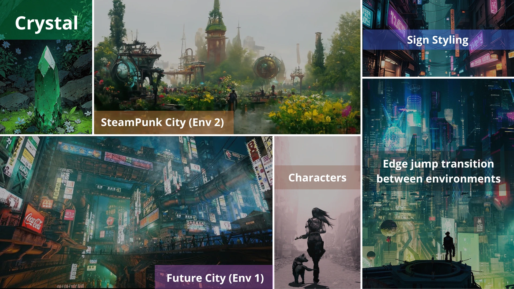
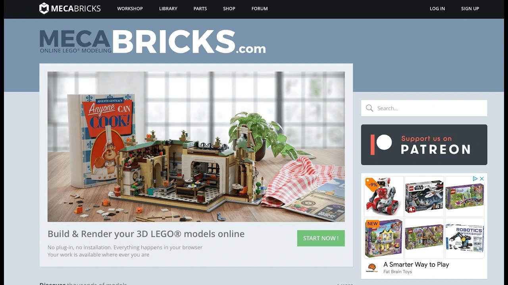

This project was my submission for the "Kinetic Rush" 3D community challenge hosted by Pwnisher. The prompt was to create a dynamic parkour scene using a provided template.
You can see my submission in the official challenge compilation video here. (timestamp 4:19:56)
The Story
The story is set in a dying world where our main protagonist and her dog must escape an evil parasite invasion. Their only hope for survival is an all-in-one green crystal the girl is holding, which possesses the ability to teleport. They must hurry and activate the teleportation before the monster catches them.
Concept & Inspiration
Continuing with the style I developed for the Boss Fight challenge, I created another Lego animation. I wanted to experiment with better lighting and a dramatic scenery change between two distinct environments: a futuristic dying city and a steampunk city.
I created a canvas of reference images to develop the style and story for the animation, as seen below.

Technical Details
The scene was created in Blender 4.1. To maintain the authentic Lego look and achieve the visual effects:
- Rigid movement: Adhering to the physical limitations of Lego minifigures.
- Simulation: Created a tentacle simulation using elongated Lego pieces for the first environment to persecute the characters before teleporting, and a Lego smoke generation system for the airship seen flying in the second environment.
- Lighting & Scenery: Focused on advanced lighting techniques to distinguish the transition between the futuristic dying city and the steampunk environment.
- Assets: Characters and environment parts were created using Mecabricks.
